Ichikawa, Chiba: things to do, food and stays
Ichikawa · Chiba
Ichikawa
Highlighted on the Chiba map.
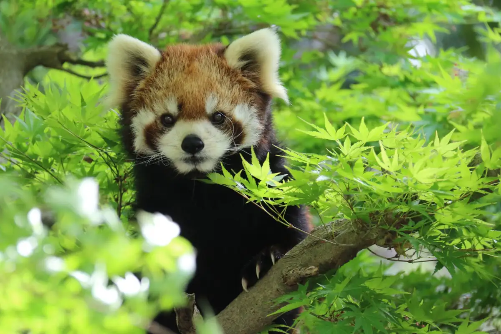
Stay
HOTEL R9 Premium 市川駅前
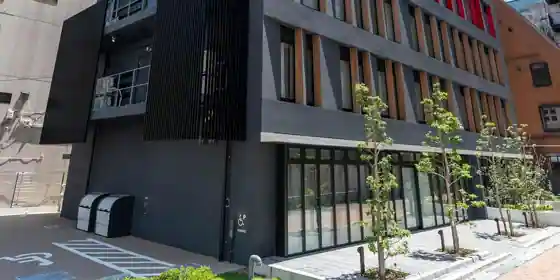
HOTEL R9 Premium Ichikawa Ekimae
WE HOME HOTEL＆KITCHEN 市川・船橋
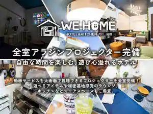
WE HOME HOTEL&KITCHEN Ichikawa Funabashi
市川グランドホテル（ＢＢＨホテルグループ）
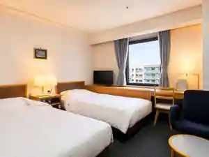
Ichikawa Grand Hotel (BBH Hotel Gurupu)
Hotel in Ichikawa; 3-minute walk from Ichikawa Station.
山崎製パン企業年金基金会館
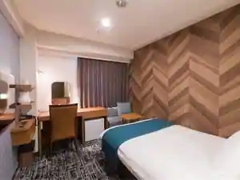
Yamazaki Sei Bakery Kigyo Nenkin Kikin Kaikan
Inn in Ichikawa with business travelers; 2-minute walk from Jrichikawa Station.
東横ＩＮＮ西船橋原木インター

Toyoko INN Nishifunabashi Genboku Inta
Inn in Genboku, Ichikawa with breakfast available.
スーパーホテル東西線・市川・妙典駅前
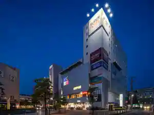
Super Hotel Tozaisen Ichikawa Myoden Ekimae
HOTEL TWIN FLAG
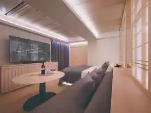
HOTEL TWIN FLAG
Inn in Shiohama, Ichikawa with parking and family-friendly stays.
ＣＶＳ・ＢＡＹ ＨＯＴＥＬ 新館（ＣＶＳ・ベイホテル新館）
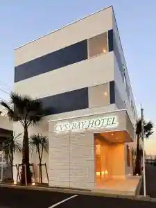
CVS BAY HOTEL Shinkan (CVS Bei Hotel Shinkan)
Hotel in Shiohama, Ichikawa with buffet meals and breakfast available; 6-minute drive from Tdrmoyorimaihamaekimade2 Station.
ナイスインホテル市川東京ベイ～舞浜まで電車6分～
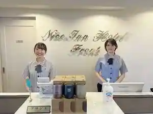
Naisu Inn Hotel Ichikawa Tokyo Bei ~ Maihama Made Densha 6 Fun ~
ＣＶＳ・ＢＡＹ ＨＯＴＥＬ 本館（ＣＶＳ・ベイホテル本館）
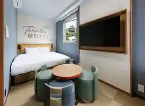
CVS BAY HOTEL Honkan (CVS Bei Hotel Honkan)
Hotel in Shiohama, Ichikawa with buffet meals and breakfast available.
Dレガーロ
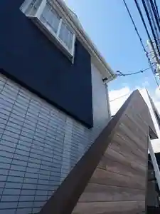
D Regaro
Dining
とんかつ ばんぶー
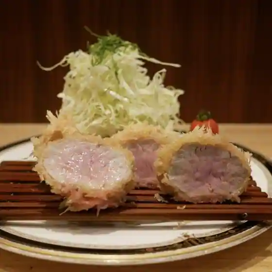
Tonkatsu Banbu
支那ソバ 小むろ
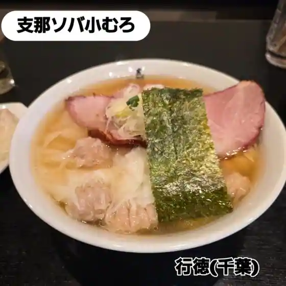
Shina Soba Sho Muro
ピッツェリア カント デッラ テッラ
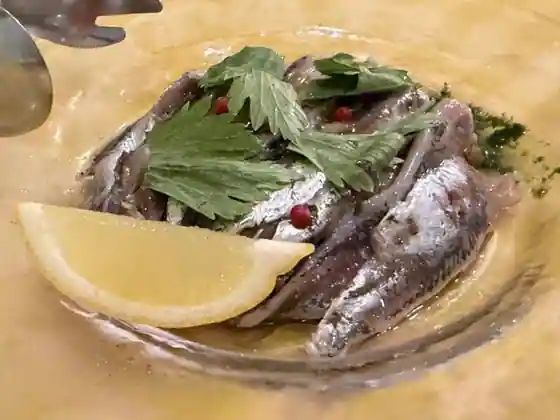
Pizzeria Kanto Derra Terra
つけソバ いしい
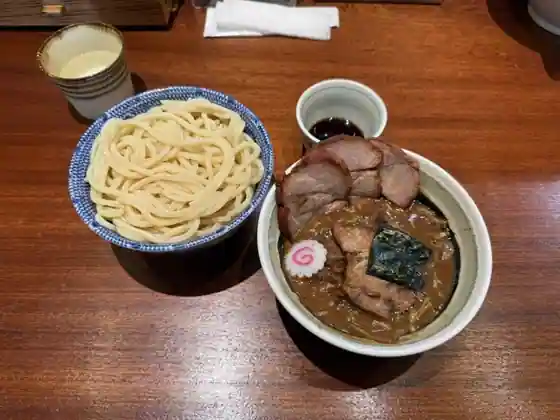
Tsuke Soba Ishi
長男、もんたいちお
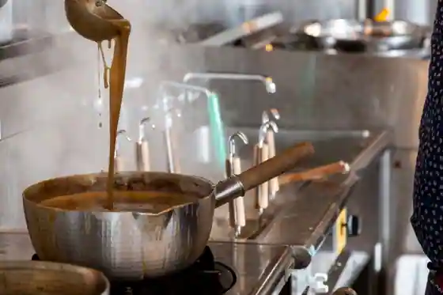
Chonan, Montaichio
レストラン ルパン
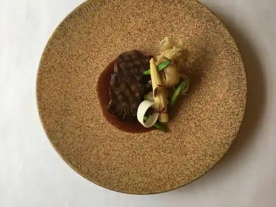
Restaurant Ru Bakery
食堂オーツカ
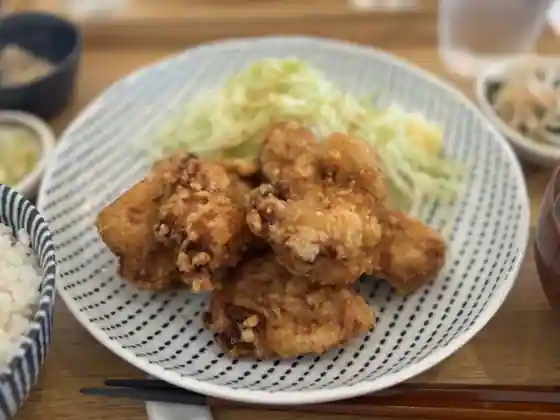
Shokudo Otsuka
オープンオーブン
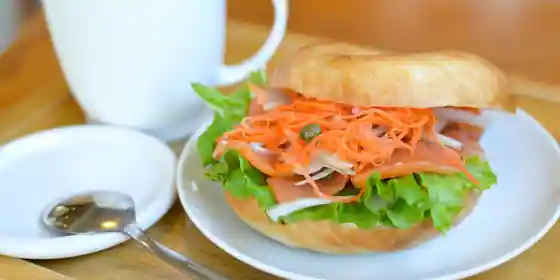
Opun'Obun
らー麺屋 バリバリジョニー
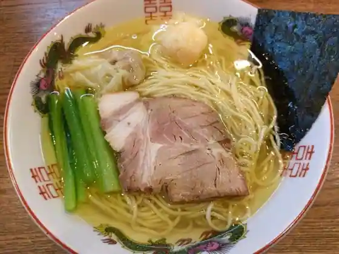
Ra Men Ya Baribarijoni
らー麺 あけどや
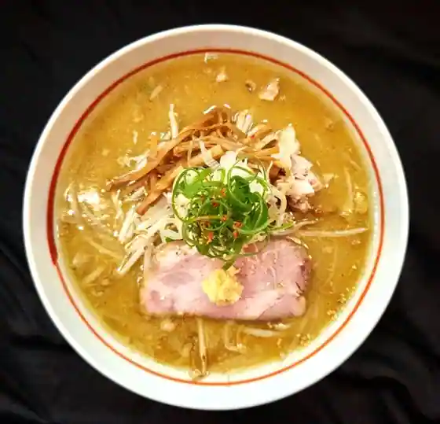
Ra Men Akedoya
二九八家 いわせ
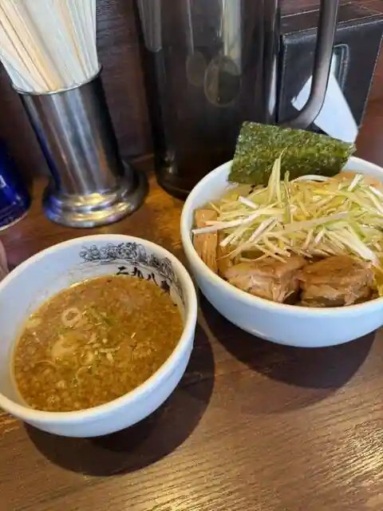
Ni Kyu Yaka Iwase
ぶたけん。
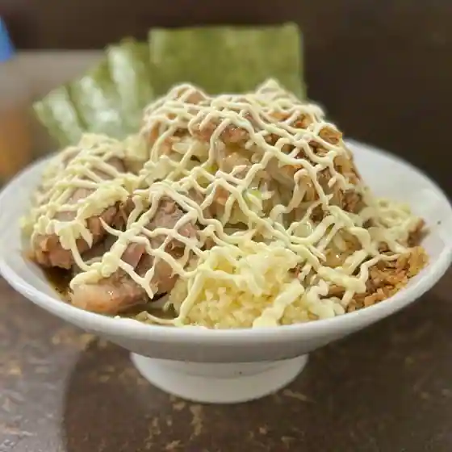
Butaken.
冨ノ家 本八幡本店
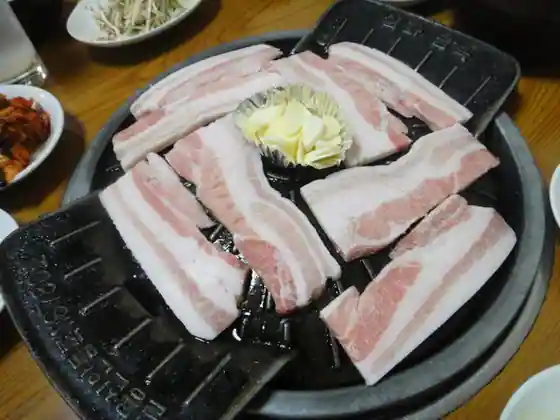
Tomi No Ie Hon Hachiman Hon
鮨 まさひろ
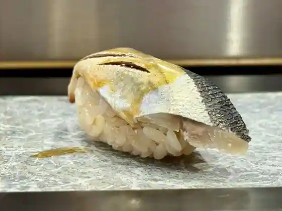
Sushi Masahiro
鳥きよ
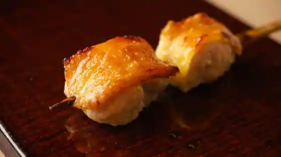
Tori Kiyo
ビーフ鈴木
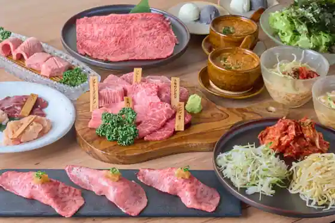
Bifu Suzuki
La casa di SOMEYA
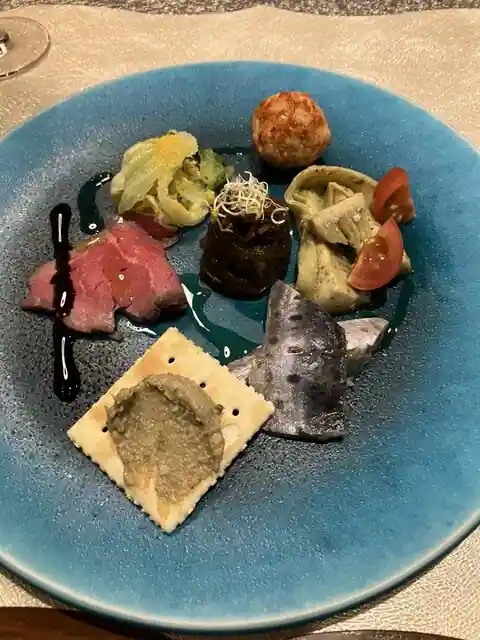
La casa di SOMEYA
魚料理・もつ鍋 山咲き
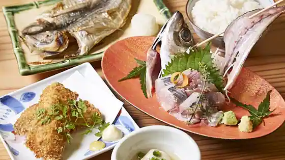
Sakanaryori Motsu Nabe Yamazaki Ki
菜
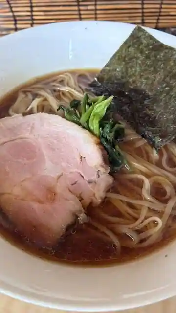
Na
ベジバル チバットリア
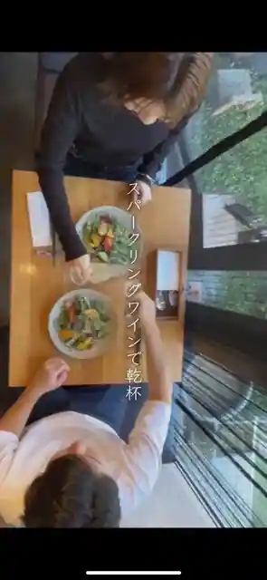
Bejibaru Chibattoria
クッチーナ もりなが
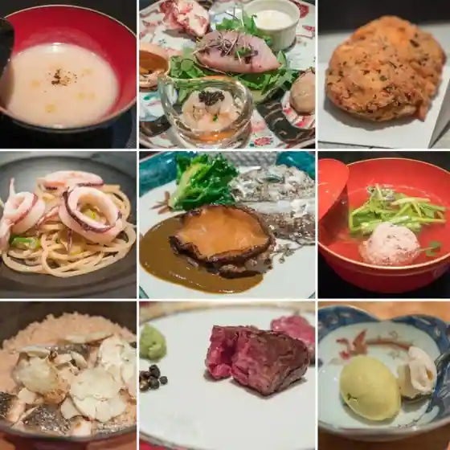
Kutchina Morinaga
炭火やきとり 富吉
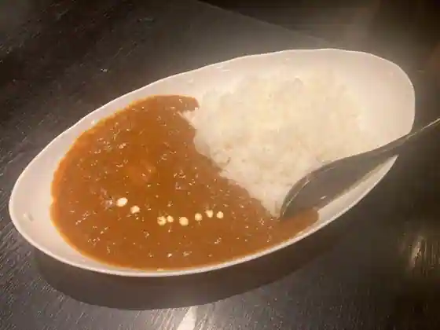
Sumibi Yakitori Tomikichi
じゃがいも
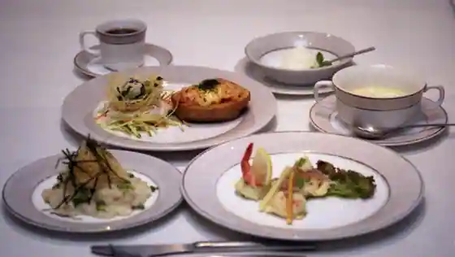
Jagaimo
鷹の爪
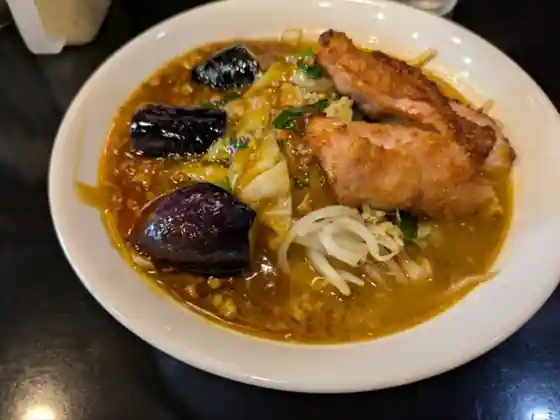
Takanotsume
Sights
Ichikawa Do Botanical Garden
Ai Rinkutaun Tembo Shisetsu
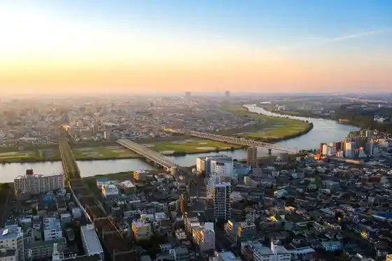
Nichiren Munehiro Honzan Nakayama Hokekyo Tera
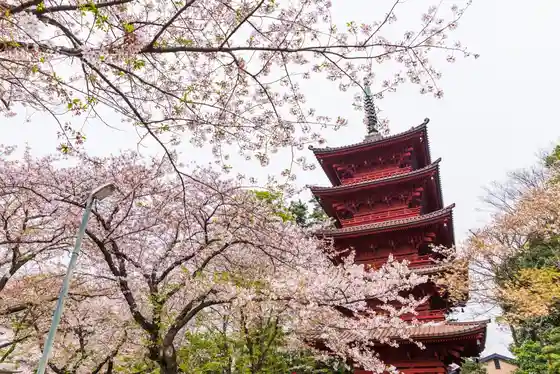
Roadside Station
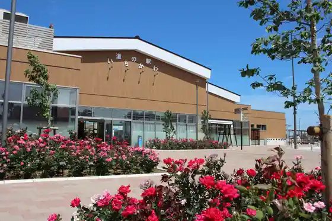
Mama Yama Hironori Tera
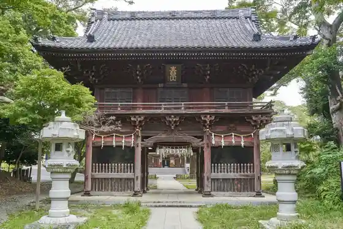
Satomi Park
Katsushika Hachiman Shrine
Chiba Prefectural Gendai Sangyo Science Museum
Ichikawa Higashiyama Kaii Memorial Museum
City Ichikawa History Museum
Kozuka Yama Fiirudoasurechikku
Kisetsu no Hana (Bara) / Ichikawa Do Botanical Garden
Shirahata Ten Shrine
Ichikawa Yukinori Fureai Densho Kan
City Ichikawa Koko Museum
Ichikawa Yukinori Yacho Kansatsu Sha (Ainesuto)
Manyo Botanical Garden
Yukinori Shinyo Museum
City Ichikawa Nature Museum
Yoshizawa Garden Gyararii
Ks Garden Lab.